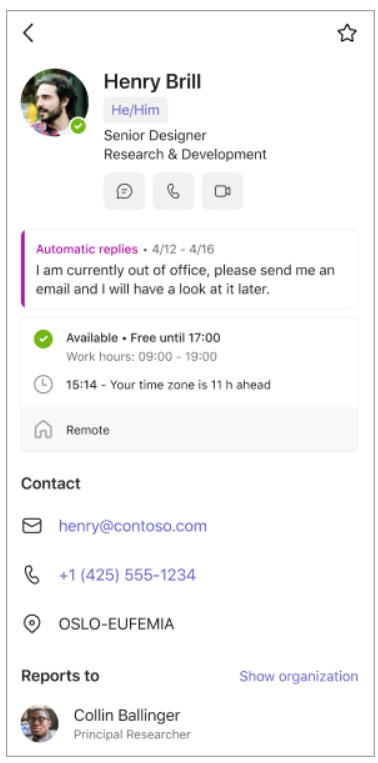

A more connected team.
MICROSOFT TEAMS · iOS & ANDROID
A Richer Profile Card for Mobile
Bringing a modern people experience to Teams mobile while validating a more scalable React Native foundation.
Read the case study ＋
The opportunity
The mobile contact card offered less context than Teams on the web and Outlook Mobile. Time zones, organisation structure, and professional details were harder to reach, while the existing framework did not scale.
Discovery & scope
I mapped features across web and mobile, audited the existing card, and shaped a proof of concept. The roadmap prioritised valuable richer-profile capabilities while preserving familiar mobile features.
Decisions & trade-offs
I chose replacement over incremental updates to align with the React initiative, balancing migration risk against a stronger foundation. Scope was tailored to mobile rather than copying every web feature. Feature continuity remained a release priority.
Execution
I led discovery, scope, roadmap, and alignment with the Teams mobile team. Engineering built the React Native proof of concept; internal testing and bug bashes informed fixes before a phased worldwide release.
Outcome
The richer profile card shipped to production worldwide on iOS and Android.

What I’d do differently
I would advocate earlier with senior stakeholders and define success measures before testing. Proposed future criteria include 85% unassisted core-task success and a 10% relative lift in meaningful contact actions; these are retrospective targets, not measured results.
Microsoft product documentation ↗